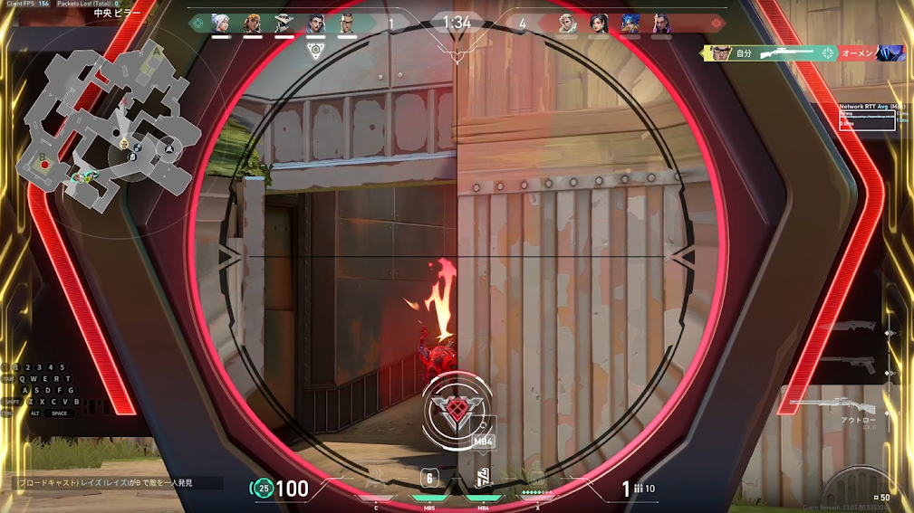
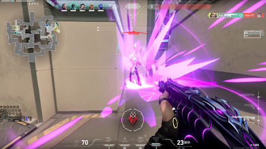
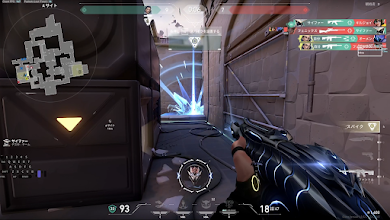

久しぶりのVALORANTコンペ、負けたけど最高だった話
久しぶりにVALORANTのコンペティティブをやってきました。結果は負け。でも、それを差し引いても余りあるくらい楽しい試合でした。
みんながVCに入ってくれた
一番うれしかったのは、野良マッチだったにもかかわらずチームメンバーがみんなVC（ボイスチャット）に入ってくれたこと。最近はVC無しで淡々と進む試合も多いので、久しぶりに声を掛け合いながら立ち回れたのが本当に楽しかったです。

エントリーのタイミングを相談したり、フェイズごとに敵の位置を共有したり、そういう当たり前のコミュニケーションがどれだけ試合を楽しくしてくれるか、改めて実感しました。
見せ場もあった
劣勢の展開が続く中でも、キルを取れた瞬間はやっぱり気持ちよかったです。

こういう派手なエフェクトが出るシーンは何度見ても楽しいですね。

負けたけど、また行きたい
結局試合には負けてしまいましたが、VCで盛り上がりながらプレイできたおかげで、勝敗以上に満足感のある1戦でした。こういうメンバーとまたマッチしたら、次は勝ちにいきたいと思います。